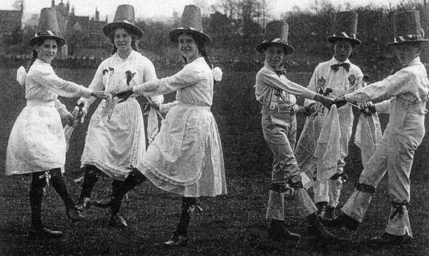

Tuesday, August the 28th, 2012
back to: title, date or indexes
A further snippet from Piers Brendon's Eminent Edwardians (1979):
Elegant and well-born (“All our family go to Heaven”), Emmeline Pethick-Lawrence became treasurer of the WPSU. Like other Suffragettes she had previously been engaged in a bizarre form of Edwardian philanthropy, the endeavour to restore to the brutalized urban masses their lost sense of the pulsating joy of Merrie England by means of folk songs and Morris dances.
Is it too late to try this again?
